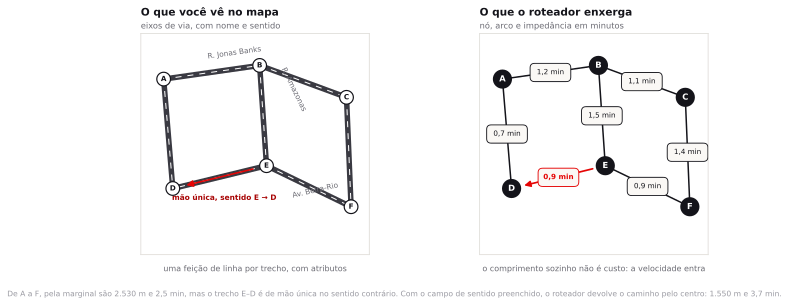
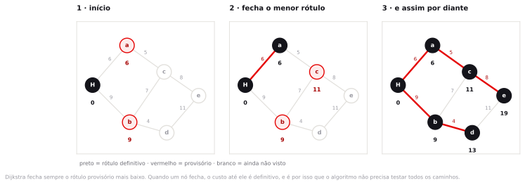
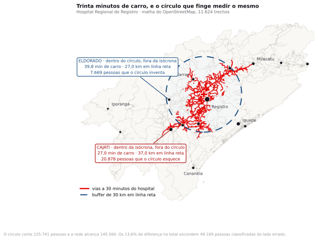
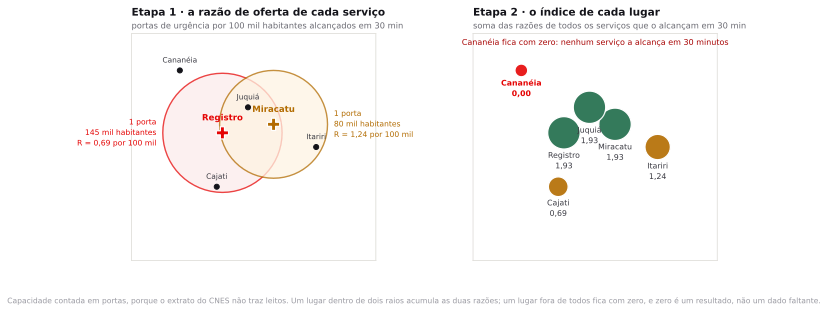
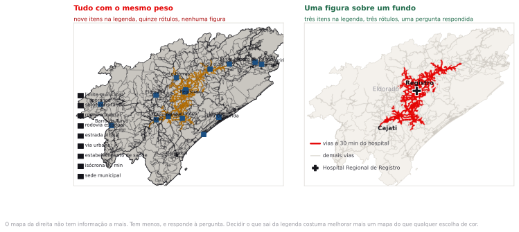

Preparação e dados
Você deveria ter lido a seção do artigo de Luo e Wang de 2003 que apresenta o método de dois estágios. São quatro páginas e uma fórmula. Se não leu, leia o resumo e a figura 1 agora.
Esta é a décima pergunta e a última aula de conteúdo. Ela tem duas metades: a primeira mede acesso pela rede real, e a segunda trata de como esse número vira uma peça que alguém com poder de decisão consegue ler em dez segundos.
- setores_vale_2022.gpkg 1.005 setores censitários dos quinze municípios do Vale do Ribeira, polígono, EPSG:4674, com população nas variáveis v0001 a v0007 do Censo 2022. É este o recorte que o roteiro usa.oficial
- malha_viaria_vale_osm.gpkg 11.624 trechos de linha, 6.852,760 km, com os campos do próprio OSM:oficial
tipo(a chavehighway),maxspeed,oneway,surface,nome,refecomp_m. Recortados pelos quinze municípios. EPSG:31983. Do OpenStreetMap pela Overpass API. - hospitais_vale_cnes_2026.gpkg 17 unidades hospitalares e de urgência ativas em 14 dos quinze municípios: 4 hospitais gerais, 4 prontos-socorros gerais, 8 prontos atendimentos e 1 unidade mista, distinguidos pelo campooficial
tipo. Cananéia não tem nenhuma. Ponto, EPSG:31983, coordenada do próprio cadastro do CNES. Não há campo de leitos nem de horário de funcionamento. - municipios_vale_2022.gpkg 15 polígonos municipais da malha 2022 do IBGE, com código e área oficiais, 13.288,0 km² no total. EPSG:31983.oficial
- setores_sp_capital_2022.gpkg 27.301 setores censitários do município de São Paulo, polígono, EPSG:4674. Fica no pacote para quem quiser repetir a análise na capital.oficial
native:snapgeometries antes da área de serviço, ou o cálculo falha.Uma secretaria estadual precisa decidir onde abrir a próxima porta de urgência 24 horas no Vale do Ribeira. O consultor entrega um mapa com círculos de 30 quilômetros em volta dos hospitais existentes. Quanto esse mapa está errado, e o erro é para mais ou para menos?
Redes, acessibilidade e comunicação cartográfica
Até agora o espaço foi contínuo. Você media distância entre dois pontos e a resposta era a reta que os liga, porque nada impedia a passagem. Uma ambulância não anda em linha reta, e modelar essa restrição é o assunto da primeira metade desta aula.
Para medir movimento é preciso trocar o espaço contínuo por um grafo: um conjunto de nós ligados por arcos, onde só é possível ir de um nó a outro percorrendo arcos existentes. O cruzamento vira nó, o trecho de rua vira arco, e o comprimento do trecho, dividido pela velocidade permitida, vira o custo de atravessá-lo.
Impedância
Impedância é o custo de percorrer um arco. Pode ser comprimento em metros, tempo em segundos, consumo de combustível, pedágio, esforço de subida ou uma combinação ponderada. A escolha da impedância é a decisão analítica central do problema, e ela não vem do dado: vem da pergunta. Trocar distância por tempo muda a rota, muda a área de serviço e muda a conclusão política.

Um grafo em que os arcos têm direção é dirigido. Isso importa mais do que parece: em uma malha urbana com muitas vias de mão única, ignorar o sentido produz rotas fisicamente impossíveis e subestima sistematicamente o tempo de viagem. No QGIS o sentido entra por um campo da tabela, que no OpenStreetMap se chama oneway. Se você deixar esse campo em branco na janela do algoritmo, o programa assume mão dupla em tudo, sem avisar. Na malha desta aula, 1.964 dos 11.624 trechos são de mão única.
Uma rede que parece contínua na tela pode estar quebrada no grafo. Dois trechos que se cruzam sem compartilhar um vértice são, para o roteador, dois arcos que não se tocam, e o resultado é uma rota absurda ou um "não há caminho". Antes de qualquer análise de rede, verifique a topologia. Ponte e viaduto são o caso legítimo em que dois trechos se cruzam e não se conectam, e é por isso que a validação não pode ser automática.
Caminho mínimo e o algoritmo de Dijkstra
Achar o caminho de menor custo entre dois nós parece exigir testar todas as combinações, e em uma rede com dezenas de milhares de arcos isso seria inviável. Em 1956, Edsger Dijkstra resolveu o problema em vinte minutos, sem papel, esperando um café em Amsterdã.
A ideia é simples de descrever. Cada nó carrega um rótulo com o menor custo conhecido até ele, inicialmente infinito, exceto a origem, que vale zero. A cada passo, o algoritmo fecha o nó com o menor rótulo provisório, declara aquele custo definitivo e atualiza os vizinhos. Repete até fechar o destino.

O resultado do algoritmo não é uma rota, é uma árvore: o caminho mínimo da origem para todos os nós alcançáveis, de uma vez só. Essa é a razão pela qual calcular uma isócrona custa quase o mesmo que calcular uma única rota, e é o que torna a análise de acessibilidade viável em escala municipal.
Matriz origem-destino, área de serviço, isócrona
Três construções derivam do caminho mínimo, e vale saber qual pedir.
| Construção | O que é | Para que serve |
|---|---|---|
| Matriz origem-destino | Uma tabela com o custo de cada origem até cada destino | Alocar demanda a equipamentos, dimensionar frota, escolher entre unidades concorrentes |
| Área de serviço | O conjunto de arcos alcançáveis a partir de um ponto dentro de um orçamento de custo | Delimitar a área de influência real de uma unidade |
| Isócrona | A área de serviço quando a impedância é tempo, desenhada como polígono | Comunicar cobertura: "quinze minutos daqui" é uma frase que qualquer pessoa entende |
Essa última frase merece atenção. O algoritmo devolve os trechos de via alcançados. Para dizer "quantas pessoas moram dentro", é preciso virar polígono, e há três caminhos usuais: envoltória convexa, que sempre exagera; envoltória côncava, que depende de um parâmetro arbitrário; e corredor, que é um buffer em torno das vias alcançadas. No roteiro de hoje usamos o corredor de 1.500 metros, porque no Vale do Ribeira a ocupação segue a estrada. Em uma cidade densa a escolha seria outra, e o número mudaria.
O preço da linha reta
No tema 5 você desenhou um buffer de 600 metros em torno das estações de metrô e usou aquele círculo para decidir onde caberia habitação social. O círculo estava errado, e agora dá para dizer o tamanho do erro.
A razão entre a distância pela rede e a distância em linha reta chama-se índice de desvio. Em malha urbana ortogonal ele fica em torno de 1,2 a 1,3. Em terreno acidentado, com rio, serra ou ferrovia no meio, passa de 2. E como área cresce com o quadrado da distância, um índice de 1,3 significa que a área efetivamente alcançável a pé em 600 metros de calçada fica em torno de 60% da área do círculo, porque 1 dividido por 1,3 ao quadrado dá 0,59. Quatro décimos do que o mapa do tema 5 pintou como servido não estavam a 600 metros de caminhada.

Se o total pela rede e o total pelo círculo diferem 13,6%, por que não usar o círculo, que é mais barato de calcular?
Porque a decisão não é sobre o total. Uma secretaria não trata "145 mil pessoas"; ela decide onde abrir uma unidade, e para isso precisa saber quais pessoas. O círculo erra o endereço de 49.169 delas, um terço da população que a rede alcança, e é sobre endereços, não sobre totais, que se escolhe onde abrir a unidade. A diferença no total é pequena porque os dois erros se compensam em parte; em outra geografia eles se somam, e aí o total também fica errado.
O conceito de acessibilidade
Estar a trinta minutos de um hospital não significa ser atendido em trinta minutos. Se as mesmas cem mil pessoas estão a trinta minutos do mesmo hospital de quarenta leitos, a distância é a mesma e o acesso é péssimo. Acessibilidade é uma relação entre oferta e demanda mediada pelo custo de deslocamento, e medi-la exige olhar os dois lados.
O método mais usado para isso é o de dois estágios de área de captação flutuante, proposto por Luo e Wang em 2003, e conhecido pela sigla em inglês 2SFCA. Ele tem duas etapas e nenhuma matemática difícil.

No primeiro estágio, para cada serviço, delimita-se a área de captação e calcula-se a razão entre a capacidade e a população contida nela. O Hospital Regional de Registro alcança 145.560 pessoas em trinta minutos; o pronto-socorro de Miracatu alcança 80.489. Contando cada unidade como uma porta, a razão de Registro é 0,69 porta por 100 mil habitantes e a de Miracatu, 1,24. A unidade que atende menos gente tem a melhor razão, e esse é o ponto do método.
No segundo estágio, para cada lugar de residência, delimita-se a área de captação e somam-se as razões de todos os serviços que caem dentro dela. Os 55.136 habitantes alcançados pelas duas unidades ficam com 1,93, e estão em Registro, Juquiá e Miracatu. Quem só é alcançado por Registro fica com 0,69. Cananéia, que não é alcançada por nenhuma das duas em trinta minutos, fica com zero.
O 2SFCA pede capacidade: leitos, médicos por turno, consultas ofertadas por mês. O extrato do CNES deste pacote não tem nenhum desses campos, e contar cada estabelecimento como uma unidade trata o Hospital Regional de Registro e um pronto atendimento municipal como equivalentes, o que eles não são. A contagem de leitos existe na base do CNES, em outro arquivo da mesma competência, e é ela que deveria entrar aqui. Faça a conta com o que existe, e escreva na legenda que a capacidade foi contada em portas.
Dois bairros estão exatamente a vinte minutos de um hospital. Um deles tem índice de acessibilidade três vezes maior que o outro. Como?
Porque a competição pela mesma vaga é diferente. Se o segundo bairro divide aquele hospital com uma população três vezes maior, a razão oferta por habitante cai na mesma proporção. É o que separa Registro de Miracatu no exemplo acima: mesma contagem de unidades, populações alcançadas quase o dobro uma da outra. É por isso que mapa de distância a equipamento e mapa de acesso a equipamento não são a mesma peça, e por isso que "todo mundo tem hospital a menos de trinta minutos" é uma frase que não afirma nada sobre atendimento.
Por que isso importa de forma diferente no seu curso
| Curso | A mesma isócrona, outra pergunta |
|---|---|
| Engenharia | Tempo de ciclo, dimensionamento de frota e localização de centro de distribuição. A impedância é custo operacional por quilômetro rodado, e a rede define o raio econômico da operação. |
| Administração | Área de influência de loja, canibalização entre unidades da mesma rede e escolha de ponto. Uma isócrona de 15 minutos de carro é o padrão de mercado para varejo alimentar. |
| Economia | Acesso a mercado e custo de transporte como determinante de preço regional. A mesma matriz origem-destino alimenta modelo gravitacional de fluxo comercial e migratório. |
| Direito e políticas públicas | Direito à saúde traduzido em minutos. A Rede de Atenção às Urgências trabalha com tempo-resposta, e um mapa de tempo até a porta 24 horas é peça de ação civil pública e de plano regional de saúde. |
O mapa como argumento visual
Os últimos quinze minutos de teoria do semestre tratam da peça que sai da análise, porque ela é a única parte que a maioria das pessoas vai ver.
Quem recebe o seu mapa tem, na prática, uns dez segundos de atenção e poder de decisão: olha, forma uma impressão e passa para o próximo item da pauta, sem ler a legenda inteira nem procurar o norte. O trabalho é fazer com que a impressão formada nesses dez segundos seja a conclusão da sua análise, e não outra coisa.
Hierarquia visual e relação figura-fundo
Hierarquia visual é a ordem em que os elementos são percebidos, e ela é construída por contraste: de cor, de peso, de saturação, de tamanho. Relação figura-fundo é o efeito de um elemento se destacar como objeto sobre um contexto que recua. Um mapa sem relação figura-fundo dá o mesmo peso a tudo, e o leitor não descobre qual é o assunto.

O passo que mais melhora um mapa é decidir o que sai da legenda. Toda camada que você carregou tem um dono emocional, que é você, e tirar uma parece perda de trabalho. Mas cada item de legenda cobra atenção de quem olha, e a atenção é o recurso escasso da peça. A pergunta a fazer item por item é direta: se eu apagar isto, alguma conclusão muda? Se não muda, sai.
O seu mapa de isócronas tem nove itens na legenda. Quantos deveriam ficar?
Provavelmente três. A camada que responde à pergunta, a camada que dá referência geográfica mínima para o leitor se localizar, e a camada dos pontos de interesse. Limite municipal, malha viária completa, setor censitário e classificação de rodovia por tipo são contexto, e contexto se comunica por peso visual, em cinza claro, sem entrar na legenda. Nem tudo que aparece no mapa precisa ser nomeado.
Há, por outro lado, um conjunto de elementos que não é negociável. Uma peça cartográfica defensável carrega seis coisas, e a falta de qualquer uma delas é motivo legítimo para o outro lado descartar o documento.
| Elemento | Por que ele é obrigatório |
|---|---|
| Escala | Sem ela o leitor não sabe se a mancha vermelha tem dois quarteirões ou dois municípios. Prefira barra gráfica: ela continua correta depois que alguém redimensiona a imagem no slide. |
| Orientação | Uma seta discreta. Só é dispensável quando o norte está para cima e a área é reconhecível, o que é menos frequente do que se imagina. |
| Fonte dos dados | Nome da base, órgão e ano de referência. É o que permite ao leitor refazer, e é o primeiro item que um assistente técnico da parte contrária procura. |
| Sistema de coordenadas | O código EPSG. Depois do tema 2 você sabe que uma medida de área sem CRS declarado não é auditável. |
| Autoria | Quem produziu e para quem. Mapa anônimo não tem responsável a quem pedir esclarecimento, e uma decisão pública não pode se apoiar em documento pelo qual ninguém responde. |
| Data de produção | Distinta do ano do dado. Um mapa de 2026 feito com dado de 2010 é honesto se disser as duas datas, e enganoso se disser só uma. |
Reprodutibilidade
O critério final de qualidade de uma análise é outra pessoa conseguir refazê-la: sem isso, o número depende da palavra de quem o produziu, e não há como auditá-lo. O teste é concreto: um colega, com os arquivos de origem e o seu registro de procedimento, chega ao mesmo número sem falar com você?
No QGIS isso significa três hábitos. Salvar o projeto com caminhos relativos, para que a pasta inteira possa ser copiada. Registrar a sequência de algoritmos com seus parâmetros, e o jeito mais direto é montar um modelo no Graphical Modeler, que é ao mesmo tempo a ferramenta e a documentação. E versionar os dados de entrada, guardando a data do download e a versão da base, porque o OpenStreetMap de hoje não é o de mês que vem.
Baixar a malha viária pelo plugin QuickOSM é rápido e funciona bem, e é o que você faria em um projeto real; a nota do passo 1 diz como instalá-lo. Mas a consulta de hoje devolve um resultado diferente da consulta de amanhã, porque o OpenStreetMap é editado continuamente. Se o seu relatório cita um número de rede, o download precisa ser guardado como arquivo, com data, e distribuído junto com o relatório. É por isso que o roteiro de hoje usa um arquivo fixo: para que os números sejam reproduzíveis daqui a dois anos.
Dada uma análise de acesso a um equipamento, a prova pode pedir que você identifique se a medida usada foi euclidiana ou de rede e estime a direção e a ordem de grandeza do erro; que descreva a diferença entre distância, área de serviço e acessibilidade, e diga qual delas responde a uma pergunta concreta; ou que audite uma peça cartográfica, apontando o que falta para ela ser defensável e o que deveria sair da legenda.
Medindo o acesso no Vale do Ribeira
Os números abaixo foram conferidos no QGIS 4.2.0. Um deles depende de uma unidade que quase todo mundo erra na primeira vez, e o passo 4 avisa qual é.
Carregar as camadas e conferir a rede
- Crie a pasta
InfoGeo/tema10_redese salve um projeto novo. - Vá em Project ▸ Properties ▸ General e marque Save paths como relative.
- Ainda em Properties, defina o CRS do projeto como
EPSG:31983 — SIRGAS 2000 / UTM zone 23S, e o elipsoide como GRS 1980. - Arraste as quatro camadas do pacote para dentro da janela. Reprojete
setores_vale_2022paraEPSG:31983comnative:reprojectlayere salve comodados_tratados/setores_31983.gpkg: ela vem em EPSG:4674 e o resto do pacote está em UTM. - Abra a tabela de atributos de
malha_viariae leia os campos que existem:tipo,maxspeed,oneway,surface,nome,refecomp_m. Não há campo de tempo nem de velocidade pronta. - Use Vector ▸ Analysis Tools ▸ Basic Statistics for Fields sobre
comp_mpara somar o comprimento da rede. - Clique com o botão direito em
maxspeed, no cabeçalho da tabela, e use Sort para ver quantas linhas estão em branco. Ou filtre por"maxspeed" IS NULLe leia o total.
São 11.624 feições de linha, somando 6.852,760 km. O campo maxspeed está preenchido em 728 delas, 6,3% do total, e vazio nas outras 10.896. O campo oneway traz yes em 1.964 trechos, no em 1.379, reversible em 1 e vem vazio em 8.280. hospitais tem 17 pontos em 14 dos 15 municípios, e o campo que os distingue é tipo: 4 hospitais gerais, 4 prontos-socorros gerais, 8 prontos atendimentos e 1 unidade mista. setores tem 1.005 polígonos e 277.852 habitantes na soma de v0001.
O CNES não publica "porta 24 horas" nem contagem de leitos no cadastro de estabelecimento: o que há é tipo, a natureza da unidade. Leito está em outro arquivo da mesma competência da base, e não veio neste recorte. O OpenStreetMap não publica tempo de percurso nem velocidade praticada: publica maxspeed, quando alguém digitou, e highway, aqui renomeado para tipo. Os dois casos são o mesmo problema: o campo que a análise pede não existe, e a saída é construí-lo a partir do que existe, dizendo como. É o que o passo 2 faz.
Até a série 3.x, os algoritmos de rede mediam o comprimento dos arcos no CRS do projeto. Bastava o projeto ficar em EPSG:4674 para os comprimentos saírem em graus e os tempos errarem por um fator de cem mil, sem nenhuma mensagem. O QGIS 4.2 corrigiu esse comportamento: o resultado sai igual com o projeto em EPSG:31983 ou em EPSG:4674, conferido nesta rede. Mantenha o projeto em EPSG:31983 mesmo assim, porque a ferramenta de medição e as áreas desta aula continuam dependendo dessa escolha, e porque quem abrir o projeto numa 3.x herda o problema antigo.
De uma consulta à Overpass API por retângulo, em 02/08/2026, com chave highway e os valores motorway, trunk, primary, secondary, tertiary, unclassified e residential, mais os respectivos _link, recortada pelos quinze municípios. O roteiro inteiro roda com o arquivo do pacote, e repetir a consulta hoje devolveria outro arquivo, porque o OSM é editado continuamente. É por isso que o pacote traz o download congelado.
Para extrair a malha de outra cidade, o caminho é o plugin QuickOSM, que não vem instalado: vá em Plugins ▸ Manage and Install Plugins ▸ All, busque QuickOSM e clique Install Plugin, com internet. Ele passa a aparecer em Vector ▸ QuickOSM ▸ QuickOSM. Guarde o resultado como arquivo, com a data no nome.
Rua residencial entra na consulta porque análise de rede exige conectividade: sem ela, o hospital fica ilhado do resto da malha. O preço é o volume: 7.304 dos 11.624 trechos são residential, e eles somam 2.069,2 km. As rodovias, somadas, dão 1.110,7 km.
Construir a impedância a partir do que o OSM tem
A rede não traz tempo. Traz comprimento, classe de via e, em 6,3% dos trechos, velocidade máxima. O algoritmo do QGIS aceita um campo de velocidade em km/h e calcula o tempo sozinho, então basta produzir esse campo.
- Abra o Field Calculator em
malha_viariae crie um campo inteiro chamadovel_kmhcom a expressão abaixo.
coalesce(
to_int("maxspeed"), -- 1º: o que o OSM declara
map_get(map( -- 2º: referência por classe de via
'motorway',100, 'motorway_link',60,
'trunk',80, 'trunk_link',50,
'primary',70, 'primary_link',45,
'secondary',60, 'secondary_link',40,
'tertiary',50, 'tertiary_link',35,
'unclassified',40,
'residential',30), "tipo"),
40) -- 3º: rede de segurança, se o tipo for novo
O to_int da primeira linha existe porque maxspeed é texto no OSM, e às vezes vem como 50 mph ou BR:urban, que não viram número: nesses casos ele devolve nulo e o coalesce passa para a linha seguinte. Neste arquivo os 728 valores preenchidos são todos números limpos, de 20 a 110 km/h, então a primeira linha resolve todos os 728.
- Crie também
tempo_min, decimal, só para poder inspecionar a tabela. O QGIS não vai usar este campo, mas você vai.
"comp_m" / 1000.0 / "vel_kmh" * 60
Nenhum vel_kmh pode ficar nulo. A velocidade média da rede, ponderada pelo comprimento, é de 39,5 km/h, e percorrer os 6.852,8 km inteiros levaria 173,6 horas. Se você obteve algo perto de 60 km/h, provavelmente o coalesce caiu no valor de segurança em muitos trechos, e vale conferir os valores distintos de tipo.
maxspeed está e onde não estáEle está preenchido em todos os 419 trechos de motorway, em 91 dos 310 de primary e em 53 dos 7.304 de residential. Ou seja: existe justamente onde a velocidade é mais previsível e falta justamente onde ela varia mais. A tabela de referência que você acabou de digitar carrega, portanto, quase todo o peso do resultado, e não é dado: é uma hipótese sua, com nome e valores que precisam aparecer no relatório. Trocar 30 por 40 km/h em rua residencial move todas as isócronas.
O campo surface diz que 869 trechos são unpaved e outros dezenas são de terra, areia ou pedra. Em estrada vicinal de terra no Vale do Ribeira, 40 km/h é otimismo em dia de chuva. Rampa, curva, travessia de balsa e parada de pedágio também não entram. Cada um desses seria um fator a mais na conta, e todos empurram o tempo para cima, nunca para baixo.
A resposta ingênua: o círculo de 30 quilômetros
Trinta minutos a 60 km/h dão trinta quilômetros. É assim que o cálculo é feito na maior parte dos relatórios, e vale fazer primeiro para ter contra o que comparar.
- Selecione o Hospital Regional de Registro, que é a referência regional de urgência. O filtro é
"cnes" = '9556095'; os outros três estabelecimentos de Registro ficam de fora por enquanto. - Rode Vector ▸ Geoprocessing Tools ▸ Buffer.
- Input layer
- hospitais (apenas feições selecionadas)
- Distance
- 30000 metros
- Segments
- 20
- Dissolve result
- marcado
- Buffered
- dados_tratados/buffer_30km.gpkg
- Gere os pontos representativos dos setores com
native:pointonsurfacesobresetores_31983. Salve comodados_tratados/setores_ponto.gpkg. Use este algoritmo, e nãonative:centroids: setor em forma de C ou de ilha tem centroide fora do próprio polígono. - Rode
native:extractbylocationcom Extract features from =setores_ponto, predicado are within, e By comparing to =buffer_30km. - Some a coluna
v0001do resultado com Basic Statistics for Fields.
125.741 pessoas em 299 setores, ou 45,3% dos 277.852 habitantes da região. Guarde esse número.
Um setor que fica metade dentro e metade fora conta inteiro ou não conta nada, dependendo de onde cai o seu centroide. A alternativa é a ponderação por área, que reparte a população proporcionalmente à área interseccionada, e que embute a hipótese de que a população se distribui uniformemente dentro do setor. Nenhuma das duas é correta; as duas precisam ser declaradas. Nos setores urbanos do Vale do Ribeira a diferença é pequena; nos 582 setores rurais, alguns com mais de 100 km², ela não é, e o ponto representativo pode cair a dezenas de quilômetros de onde as casas estão.
A rota mínima até Iporanga
Antes das isócronas, uma rota só, para ver o algoritmo funcionando e calibrar a intuição sobre o tamanho do desvio.
- Na Processing Toolbox, procure
native:shortestpathpointtopoint, que aparece como Shortest path (point to point).
- Vector layer representing network
- malha_viaria
- Path type to calculate
- Fastest
- Start point
- clique sobre o Hospital Regional de Registro
- End point
- clique sobre o pronto atendimento de Iporanga
- Direction field
- oneway
- Value for forward direction
- yes
- Value for backward direction
- -1
- Value for both directions
- no
- Default direction
- Both directions
- Speed field
- vel_kmh
- Default speed (km/h)
- 40
- Topology tolerance
- 1 metro
- Abra a tabela de atributos da rota. Ela tem um campo
cost.
O campo cost vale 1,8303. A unidade é hora, então são 109,8 minutos, ou uma hora e cinquenta. O comprimento da rota é de 117,7 km, e a distância em linha reta entre os dois pontos é de 77,1 km.
Com Fastest, o custo do QGIS está em horas. Com Shortest, está em metros. Quem digita 30 esperando trinta minutos recebe trinta horas de área de serviço, o que no Vale do Ribeira significa a rede inteira. É o erro mais comum desta aula e ele não gera nenhuma mensagem.
O índice de desvio é 117,7 dividido por 77,1, ou 1,53. Mas o número que importa é outro: quem estimasse o tempo pela reta a 60 km/h chegaria a 77,1 minutos. O tempo modelado é 109,8. A estimativa ingênua erra 32,7 minutos, quase um terço do tempo de viagem, e erra sempre para menos.
Antes de confiar em qualquer rota, rode native:shortestpathpointtolayer do hospital para os outros dezesseis estabelecimentos e confira que todos foram alcançados. Nesta rede, os 11.624 trechos formam 78 componentes desconexos: o maior reúne 11.224 trechos e 6.621,3 km, e os outros 77 somam 400 trechos e 231,5 km de ruas que não se ligam a nada. São condomínios, trechos de servidão e erros de digitalização do OSM. Se um hospital caísse numa dessas ilhas, a área de serviço dele sairia com poucos metros e nenhum aviso. Aqui os dezessete estabelecimentos ficam no componente principal, a até 73 metros do vértice mais próximo.
As três isócronas: 15, 30 e 60 minutos
- Procure
native:serviceareafrompoint, que aparece como Service area (from point). - Preencha igual ao passo 4 no que diz respeito a rede, direção e velocidade, e acrescente o custo.
- Vector layer representing network
- malha_viaria
- Path type to calculate
- Fastest
- Start point
- o Hospital Regional de Registro
- Direction field
- oneway
- Value for forward / backward / both
- yes / -1 / no
- Speed field
- vel_kmh
- Topology tolerance
- 1 metro
- Travel cost
- 0.25 (quinze minutos, em horas)
- Include upper/lower bound points
- desmarcado
- Service area (lines)
- dados_tratados/sa_15min.gpkg
- O resultado é um conjunto de linhas, não um polígono. Transforme em área com Vector ▸ Geoprocessing Tools ▸ Buffer, usando distância 1500 metros, Segments 12 e Dissolve result marcado. Salve como
dados_tratados/iso_15min.gpkg. - Rode
native:extractbylocationsobresetores_ponto, predicado are within, comparando comiso_15min, e somev0001. - Repita as três etapas anteriores com Travel cost igual a 0.5 e a 1, gerando
iso_30mineiso_60min. - Monte a tabela de faixas.
| Faixa | Custo | Rede alcançada | Setores | População | Da região |
|---|---|---|---|---|---|
| Até 15 minutos | 0,25 h | 556,6 km | 120 | 58.171 | 20,9% |
| Até 30 minutos | 0,50 h | 1.992,7 km | 322 | 145.560 | 52,4% |
| Até 60 minutos | 1,00 h | 4.729,6 km | 623 | 231.626 | 83,4% |
| Acima de 60 minutos | — | — | 382 | 46.226 | 16,6% |
145.560 pessoas chegam ao Hospital Regional de Registro em trinta minutos. E 46.226 estão a mais de uma hora, concentradas em Ilha Comprida, com 13.182, Barra do Turvo, com 6.280, Itariri, com 6.008, e no litoral de Iguape, com 5.954. Iporanga inteira, 4.046 pessoas, está nessa faixa.
Na área urbana de Registro o corredor engorda a isócrona, porque 1.500 metros a pé são vinte minutos que ninguém andou. Na zona rural de Iguape ele aperta, porque há sítio a 4 km da estrada mais próxima. O número de 145.560 depende dessa escolha tanto quanto do limiar de trinta minutos, e é por isso que ele entra no relatório com a frase "corredor de 1.500 m" ao lado.
O círculo contra a isócrona, lado a lado
Agora a comparação que responde à pergunta do tema.
- Deixe visíveis
buffer_30km, com preenchimento vazio e contorno azul tracejado, eiso_30min, com preenchimento vermelho a 35% de opacidade. - Rode
native:extractbylocationduas vezes sobresetores_ponto: uma com predicado are within contra o buffer, outra contra a isócrona. - Para achar quem diverge, use Vector ▸ Geoprocessing Tools ▸ Difference entre os dois resultados, nas duas ordens.
| Medida | Setores | População | O que ela afirma |
|---|---|---|---|
| Isócrona de 30 min pela rede | 322 | 145.560 | Chegam de carro em meia hora |
| Buffer de 30 km em linha reta | 299 | 125.741 | Estão a 30 km de distância aérea |
| Diferença líquida | −23 | −19.819 | O que aparece no resumo executivo |
A isócrona pega 322 setores e 145.560 pessoas; o buffer, 299 e 125.741. As duas operações de Difference devolvem 78 setores só na isócrona, com 34.494 pessoas, e 55 setores só no buffer, com 14.675. A soma 34.494 + 14.675 é o número que interessa.
O buffer deixa de fora 20.878 moradores de Cajati, que estão a 27,0 minutos de carro e a 37,0 km em linha reta, mais 11.316 de Miracatu e 2.300 em Juquiá, Jacupiranga e Pariquera-Açu: 34.494 pessoas que a rede alcança e o círculo não vê. Na direção contrária, ele inclui 7.669 moradores de Eldorado, a 27,0 km em linha reta e a 39,8 minutos de carro, porque a estrada contorna a serra por Sete Barras, mais 7.006 espalhados por Iguape, Sete Barras, Jacupiranga, Registro, Juquiá e Pariquera-Açu: 14.675 ao todo. Somando os dois lados, 49.169 pessoas ficam do lado errado, 33,8% da população que a rede realmente alcança, e o total esconde isso por compensação parcial.
Todas as unidades de uma vez
São 17 estabelecimentos, e nem todos são a mesma coisa. Como o CNES deste pacote não diz horário de funcionamento, o campo tipo é o que há: Hospital geral e Pronto socorro geral são as oito unidades que a natureza do cadastro associa a atendimento de urgência com retaguarda; as outras nove são prontos atendimentos e uma unidade mista.
- Procure
native:serviceareafromlayer, que aparece como Service area (from layer). - Em Vector layer with start points, use
hospitaisinteira, sem filtro. - Repita todos os demais parâmetros do passo 5, com Travel cost igual a 0.25.
- Aplique o buffer de 1.500 metros com Dissolve e extraia os pontos de setor como antes.
- Repita, agora com a camada filtrada pela expressão abaixo.
"tipo" IN ('Hospital geral', 'Pronto socorro geral') -- 8 das 17 unidades
Com as 17 unidades, 224.077 pessoas em 592 setores estão a quinze minutos de algum estabelecimento, 80,6% da região. Com as 8 de maior porte, 146.520, ou 52,7%. E a quinze minutos do Hospital Regional de Registro, sozinho, estão 58.171. Os três números respondem perguntas diferentes, e o terceiro é o que interessa para trauma grave.
tipo não é horário de funcionamentoUm estabelecimento cadastrado como pronto-socorro geral pode estar sem plantonista à noite, e um pronto atendimento municipal pode funcionar 24 horas. O CNES tem essa informação, no campo de turno de atendimento da tabela de estabelecimentos, e ela não veio neste extrato. Enquanto não vier, escreva "unidades cadastradas como hospital geral ou pronto-socorro geral" e não "portas 24 horas". A segunda frase afirma algo que o dado não sustenta.
Service area (from layer) devolve a união das áreas de todos os pontos de partida, sem dizer qual ponto alcançou o quê. Se você precisar dessa atribuição, para um 2SFCA por exemplo, rode um ponto por vez ou use a matriz origem-destino. A saída Non-routable features lista os pontos de partida que o algoritmo não conseguiu conectar à rede, e vale sempre conferir que ela saiu vazia.
O layout defensável
Vinte minutos de trabalho aqui valem mais que duas horas de análise adicional, porque é esta peça que vai circular.
- Antes de abrir o layout de impressão, arrume o projeto. Rebaixe o contexto: municípios em cinza muito claro, sem contorno forte; malha viária em cinza médio de 0,2 mm. Deixe a isócrona de 30 minutos como única camada saturada.
- Renomeie as camadas no painel Layers com os nomes que devem aparecer na legenda. O layout de impressão lê esses nomes.
- Abra Project ▸ New Print Layout e nomeie
acesso_urgencia_vale_do_ribeira. - Insira o mapa principal com Add Map, ocupando cerca de dois terços da página em A4 paisagem. Trave a escala em Item Properties.
- Insira um segundo mapa, pequeno, no canto: dê zoom em Registro para mostrar o detalhe urbano. Em Item Properties ▸ Overviews, adicione uma visão geral apontando para o mapa principal.
- Insira a legenda com Add Legend. Desmarque Auto update e apague tudo o que não seja a isócrona, o hospital e a referência mínima. Devem sobrar três itens.
- Insira a barra de escala, estilo Single box, unidade quilômetros.
- Insira a seta de norte com Add North Arrow, em tamanho discreto.
- Insira um bloco de texto com os créditos.
Acesso à urgência · Vale do Ribeira, SP
Isócrona de 30 minutos a partir do Hospital Regional de Registro (CNES 9556095).
Fontes: malha viária, OpenStreetMap via Overpass API, coleta de 02/08/2026;
estabelecimentos, CNES/DATASUS, competência 06/2026;
população, IBGE, Censo 2022, setores censitários.
Sistema de coordenadas: SIRGAS 2000 / UTM 23S, EPSG:31983.
Elaboração: [seu nome], 2026. Método: Dijkstra sobre a rede, impedância de tempo
com maxspeed do OSM e velocidade de referência por classe de via, área de serviço
convertida em polígono por corredor de 1.500 m, população por ponto de setor.
- Acrescente ao mapa um único rótulo grande com o número: 145.560 pessoas. Ele é a conclusão, e deve ser a segunda coisa que o leitor vê, logo depois da mancha vermelha.
- Exporte com Layout ▸ Export as PDF, marcando Create Geospatial PDF.
Vire a tela para o colega ao lado por dez segundos e pergunte o que ele entendeu. Se a resposta não for alguma versão de "tem gente longe do hospital no litoral e no alto Ribeira", a hierarquia visual ainda não está pronta, e o problema quase nunca é a cor: é uma camada de contexto que ainda está gritando.
Os onze passos acima são a versão curta. O módulo Preparar o mapa para entrega destrincha cada item do layout de impressão, mostra como gerar uma prancha por município com atlas e guarda a montagem em template. A prancha do projeto final é conferida contra o padrão de entrega que fecha aquele módulo.
O mesmo mapa, agora navegável
Um PDF vai para o anexo do processo. Um webmap vai para o celular do secretário na reunião.
- Instale o plugin: Plugins ▸ Manage and Install Plugins, procure
qgis2webe clique em Install. Ele não vem no perfil padrão. - Deixe visíveis apenas as camadas que devem ir para a web: isócronas, hospitais e o limite municipal.
- Abra Web ▸ qgis2web ▸ Create web map.
- Na aba Layers and Groups, marque Popups para o campo
nomedos hospitais e desmarque todos os demais campos. Popup com quinze atributos é ruído. - Na aba Appearance, escolha Leaflet como biblioteca, adicione a barra de escala e a caixa de camadas, e defina a extensão como Canvas extent.
- Clique Export. O plugin escreve uma pasta com
index.html, uma pastadatae uma pastajs.
Abra o index.html exportado no navegador, com duplo clique. A isócrona precisa aparecer sobre o mapa de fundo, no lugar certo, e o clique em um hospital precisa abrir um popup com uma linha só, o nome. Se a camada aparecer deslocada ou no meio do oceano, o CRS de alguma camada estava declarado errado no projeto.
O qgis2web reprojeta tudo para EPSG:3857, a projeção de Mercator usada pelos mapas de fundo da web. Ela não é equivalente, e nenhuma área medida sobre ela é confiável. Publique o webmap para navegação e mantenha os números no PDF, calculados em EPSG:31983. Esta é a última vez no semestre que a tema 2 vem cobrar.
Exercício
A secretaria quer habilitar uma segunda unidade de urgência com retaguarda. Dois candidatos estão na mesa: o pronto-socorro de Miracatu, no extremo norte, e o pronto atendimento de Iguape, no litoral.
- Gere a isócrona de 30 minutos a partir de cada um dos dois, com os mesmos parâmetros do passo 5 e o mesmo corredor de 1.500 metros. Os filtros são
"cnes" = '2072653'e"cnes" = '2081857'. - Para cada candidato, some a população contida. Depois descubra quanto dela já estava coberta pela isócrona de Registro e quanto é ganho novo. A ferramenta é
native:differenceentre os dois conjuntos de pontos selecionados. - Anote a cobertura conjunta de Registro com cada candidato e quanta gente continua fora de 30 minutos em cada cenário.
Responda, em quatro frases:
- Qual dos dois candidatos traz mais ganho, e por que o ganho é menor que a população que cada um alcança sozinho?
- Miracatu é cadastrado como pronto-socorro geral e Iguape como pronto atendimento. Isso muda a sua recomendação? Diga o que faria com a informação e o que faria sem ela.
- Depois de escolhido o segundo, onde ficaria a terceira unidade? Justifique com o ganho de população que ela traria.
- Cite dois critérios além de população que você usaria na decisão, e diga que dado precisaria para aplicá-los.
Iguape alcança 37.110 pessoas em trinta minutos, e nenhuma delas está na isócrona de Registro: o ganho é integral, e a cobertura conjunta vai a 182.670, 65,7% da região. Miracatu alcança 80.489, mas 55.136 dessas já estavam cobertas por Registro, então o ganho é de 25.353 e a cobertura conjunta fica em 170.913, 61,5%. Iguape ganha por 11.757 pessoas apesar de alcançar menos da metade do que Miracatu alcança. É o efeito da sobreposição, e é o argumento inteiro do exercício. Depois de Iguape, os 95.182 que continuam fora se concentram em Itariri, com 15.528, Eldorado, com 13.069, Cananéia, com 12.289, e Pedro de Toledo, com 11.281, o que aponta a terceira unidade para o eixo Itariri-Pedro de Toledo. Cananéia é o único dos quinze municípios sem nenhuma unidade de urgência neste extrato do CNES.
Fechamento
Pela rede, 145.560 pessoas chegam ao Hospital Regional de Registro em trinta minutos. O círculo de 30 quilômetros diz 125.741, erra por 13,6% no total e por 49.169 pessoas no endereço.
Com uma segunda unidade habilitada em Iguape, a cobertura conjunta sobe para 182.670, ou 65,7% da região. Continuam fora de trinta minutos 95.182 pessoas, e a maior concentração delas está em Itariri, Eldorado, Cananéia e Pedro de Toledo. O círculo não teria mostrado nada disso, porque o erro dele não está no total, está na geografia, e é a geografia que vira orçamento.
O que discutir com a turma
A isócrona foi calculada com as velocidades máximas da via. Quanto ela mudaria em uma sexta-feira de véspera de feriado na BR-116?
Muda muito, e sempre no sentido de encolher. E aqui a base é pior do que parece: a velocidade veio do maxspeed do OSM em 6,3% dos trechos e de uma tabela de referência por classe de via nos outros 93,7%. Análises sérias de acesso urbano usam velocidades observadas por faixa de horário, e a diferença entre pico e vale costuma dobrar o tempo. O ponto para levar é que toda isócrona pressupõe uma condição de tráfego, e omitir qual delas é omissão relevante. A versão publicada deveria dizer "em fluxo livre".
Quem não tem carro está dentro da isócrona?
Não. A rede modelada é a rede de automóvel, e no Vale do Ribeira a alternativa é ônibus intermunicipal com duas ou três partidas por dia. Para uma parcela grande da população, o tempo de acesso real inclui esperar o ônibus da manhã. Toda medida de acessibilidade por rede carrega um modo de transporte implícito, e quando esse modo não é o modo da população estudada, o número descreve outra gente.
O terceiro hospital deve ir para onde há mais gente descoberta ou para onde o tempo até o socorro é maior?
São critérios diferentes e apontam para lugares diferentes. Por população descoberta, Itariri ganha, com 15.528 pessoas fora dos trinta minutos no cenário com Iguape. Por tempo até o socorro, Iporanga é o caso extremo, a 109,8 minutos do Hospital Regional, com 4.046 habitantes. Um critério maximiza pessoas beneficiadas, o outro minimiza o pior caso. A escolha entre eles é normativa, não técnica, e o papel do analista é deixar as duas contas na mesa em vez de escolher em silêncio.
- Modelamos uma rede de automóvel em fluxo livre. Sem congestionamento, sem transporte coletivo, sem pedestre, sem tempo de espera para atendimento depois de chegar.
- A velocidade de 93,7% dos trechos saiu de uma tabela por classe de via que este roteiro inventou e declarou. O
maxspeeddo OSM cobre 728 dos 11.624 trechos, e o camposurface, que marca 869 trechos como não pavimentados, ficou de fora da conta. Toda isócrona daqui herda essa hipótese. - O CNES deste extrato não traz horário de funcionamento nem contagem de leitos. Tratamos as unidades pelo campo
tipo, que descreve a natureza do estabelecimento e não a porta aberta às três da manhã, e o 2SFCA foi ilustrado contando portas em vez de leitos. - Contamos por ponto representativo de setor. Nos 582 setores rurais, alguns com mais de 100 km², esse ponto pode estar longe das casas. A ponderação por área daria outro número, e nenhuma das duas resolve o fato de que a população dentro de um setor não é uniforme.
- O 2SFCA foi apresentado como ideia e não foi calculado. Fazer isso direito exige uma função de decaimento com a distância, e a escolha dessa função move o resultado tanto quanto a escolha do limiar de trinta minutos.
- Cobertura não é atendimento. Um hospital dentro da isócrona pode estar com o pronto-socorro fechado por falta de plantonista, e nenhum dado geográfico mostra isso.
O que vem agora
A terceira atividade prática supervisionada está no Blackboard a partir do fim desta aula, com base de dados nova e pergunta nova, no tema de acesso a equipamento público. Ela vale a última fatia dos 30% das APS e a entrega é individual. Leia o enunciado hoje, porque uma das etapas depende de um download que pode demorar.
O encontro 11 é de revisão integradora e prova. A primeira hora percorre as dez unidades teóricas com casos-síntese: um mapa, uma análise ou uma recomendação, e o diagnóstico do erro. A segunda hora é a prova, que vale 30% e não pergunta onde fica o menu.
O encontro 12 é a banca de projetos, dez minutos por grupo, com arguição sobre a análise e sobre o mapa. Lembre-se de que o seu grupo formula a própria pergunta, no formato das dez do semestre: uma pergunta territorial brasileira, respondível com dado público, que termina em um número que alguém precisaria para decidir alguma coisa. Metade da nota está na qualidade da pergunta e na honestidade sobre os limites do que foi medido, e as dez caixas de "o que esta aula não resolveu" que você leu ao longo do curso são o modelo do que se espera ali.